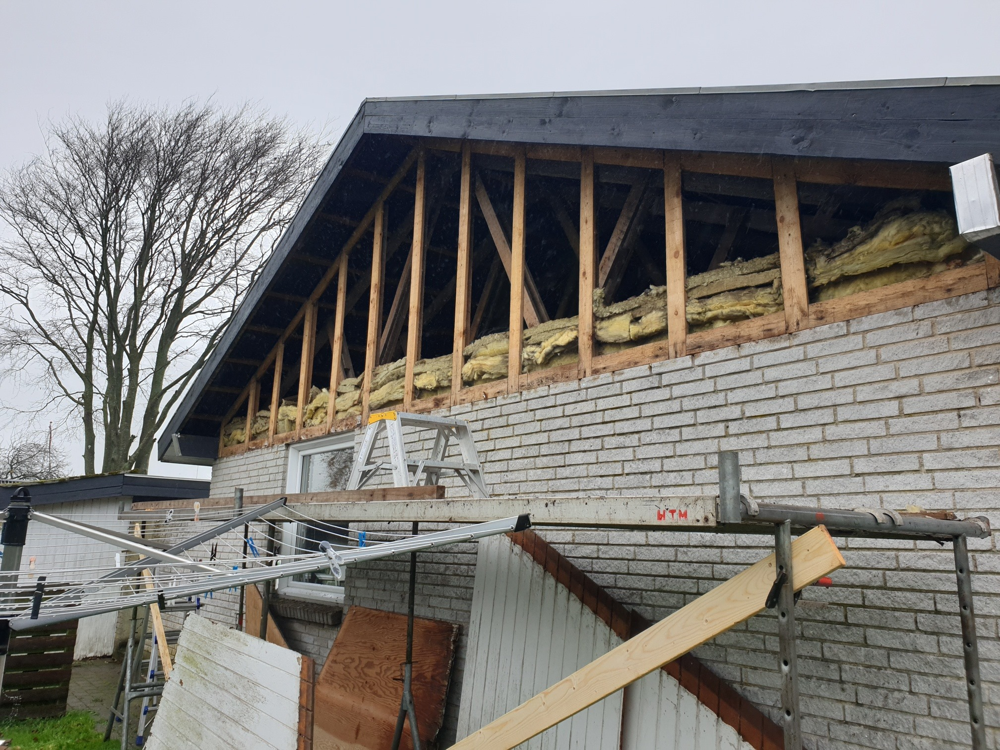
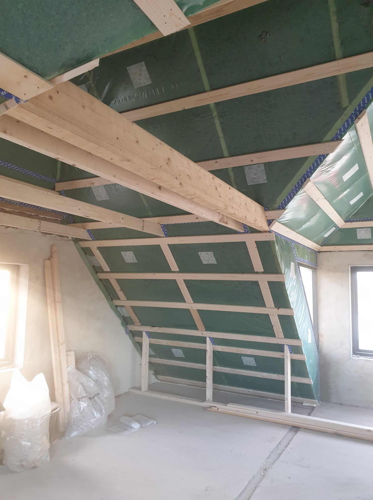
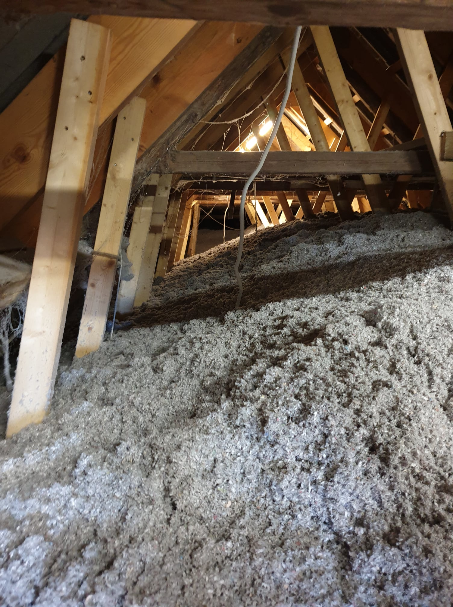
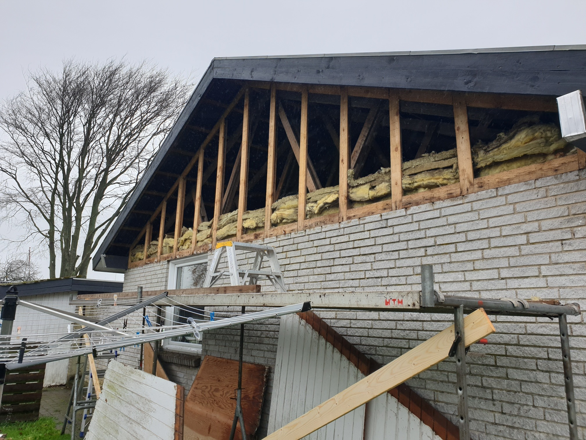
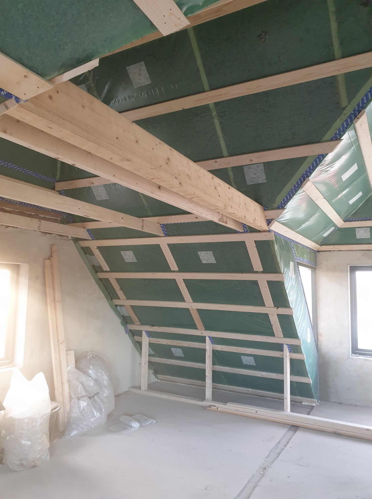
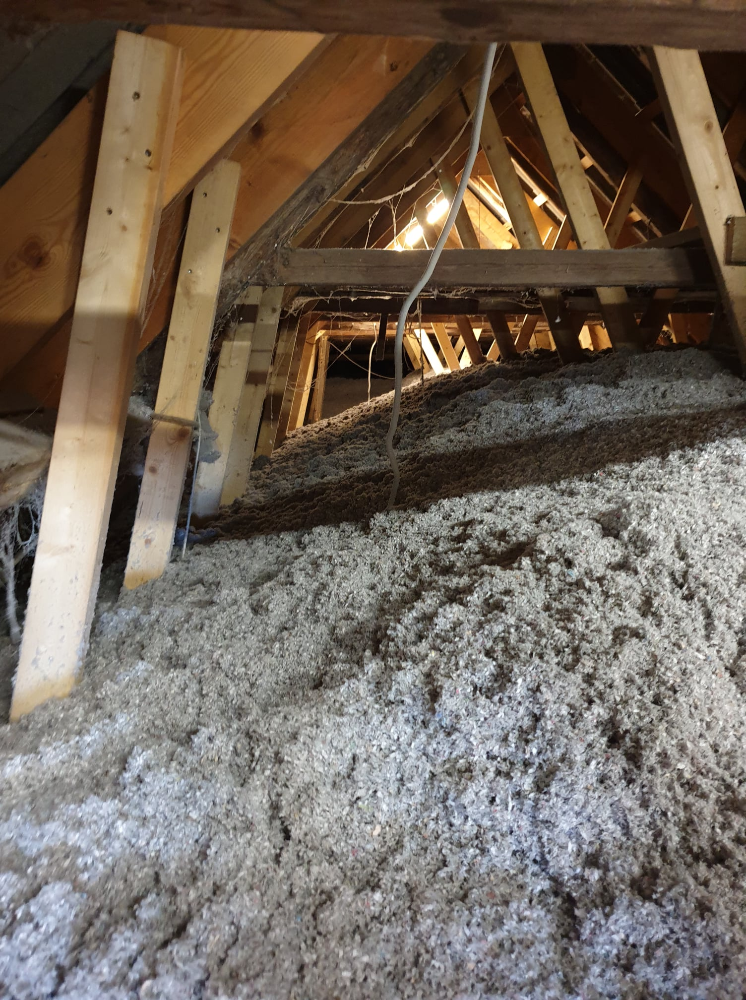

Loftisolering
Loftisolering er kritisk, fordi op til 25-30% af varmen i en bolig kan gå tabt gennem et uisoleret loft. Vi udfører isolering med materialer som mineraluld eller granulat, tilpasset husets konstruktion og lofttype.
Fordele:
- Reducerer energiforbrug og varmeregning
- Forbedrer komforten i huset
- Kan kombineres med efterisolering for maksimal effekt
 




